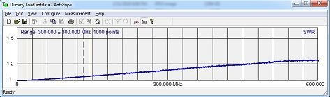

Dummy Load
I wanted a simple dry dummy load for testing and to tinker that's capable to take a decent amount of power from the transmitter.
This was a quick little evening project once I picked out and received the parts.
Parts:
- Heatsink Wakefield 423K 140x120x67mm
- 50 Ohm 250N50 Resistor
- Type N Female Panel Mount
- Thermal Paste
- 3x screws and nuts
Total cost was about $47 dollars for
two dummy load. I only build one so far. The heatsink is the most expensive part by far.
Construction:
The construction was quite easy. I opted to share a screw with the resistor and coax connector for simplicity and
ease of ground connection.


Results:
The SWR of the dummy load is perfect for HF and quite good for higher frequencies.
SWR plot:

Impedance plot:

AntScope file:
dummy-load.antdata
AntScope2 file:
dummy-load.asd
(AntScope can be downloaded at the RigExpert website for free.)
So far I have used the dummy load with a Boafeng on 2m and 70cm using 5W and Icom 7300 at 30% power using SSB on 20m band. I haven't
noticed any increased temperature of the resistor.
Potential enhancement:
- Adding a wattmeter circuit would be nice.
- RF shielding on the bottom


{kind=link}